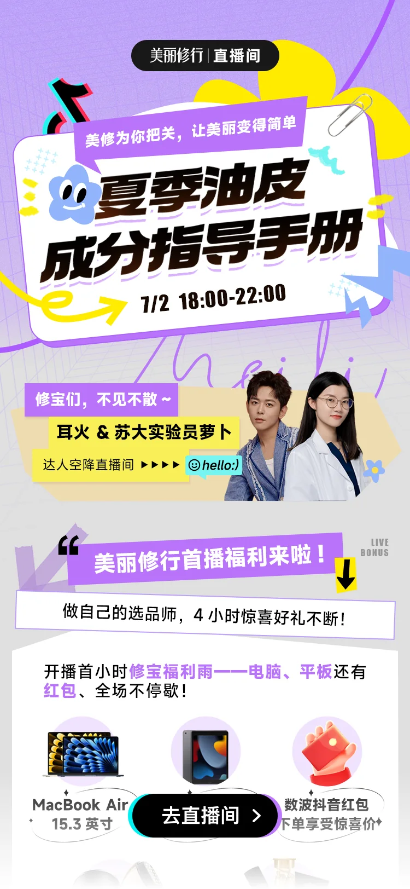
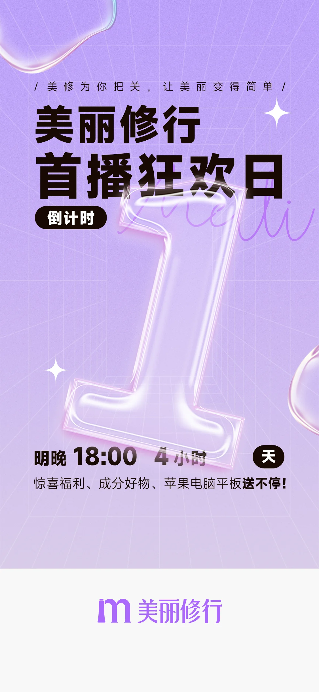
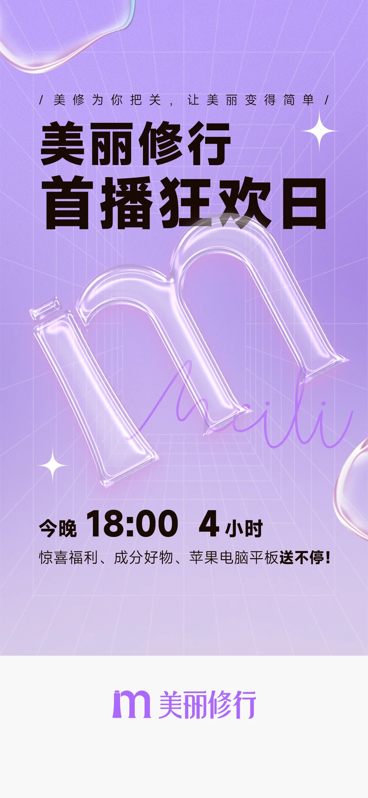
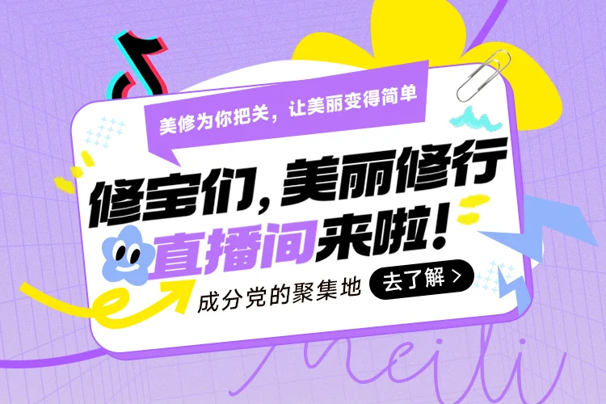
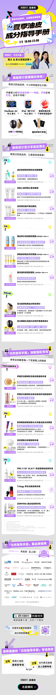

Selected Case / E-commerce Live Campaign
美丽修行
电商首播
围绕美丽修行电商首播，建立从预热倒计时、直播间入口到完整会场内容的传播链路。页面以紫色空间、荧光黄和拼贴纸张为主视觉，承载达人嘉宾、福利机制与成分商品导购。

宣传路径与阅读顺序
01 / 预热至转化按用户接收信息的顺序组织：先以倒计时建立直播时刻感，再通过直播 H5 说明主题、达人和福利，最后将完整会场内容承接到商品与品牌信息。
开屏预热→倒计时海报→直播主题 Banner→达人嘉宾→首播福利→商品内容会场→进入直播间
倒计时海报
02 / 预热资源位同一视觉系统针对不同时间节点替换数字与时间文案：透明立体字、透视网格和手写线条持续保留，帮助用户识别同一场直播活动。


UI 细节与资源位思考
03 / 嘉宾、福利与行动页面用同一套黑色圆角行动按钮作为转化锚点；紫色标题条、黄色贴纸和手写线条则把直播主题、达人介绍和福利分区串联起来。
首屏信息优先级
直播主题、时间、嘉宾与进入按钮集中呈现，让用户在首屏完成是否进入直播间的判断。
福利分段阅读
奖品、红包和限时优惠按区块展开，用标题贴纸和强对比色帮助长页面快速扫描。
达人资源可复用
将两位嘉宾拆分成独立白底资源图，便于适配 H5 模块、试用中心和站内推广位。
直播会场与推广资源
04 / 完整内容页将首屏主视觉、达人资源、奖品福利、成分好物和品牌合作信息整合为一条长页面，在底部再次提供直播间入口，形成完整闭环。


项目页依照预热、入口、内容阅读与转化入口的顺序呈现，集中展示首播活动的 UI 页面、倒计时海报和可复用资源位。